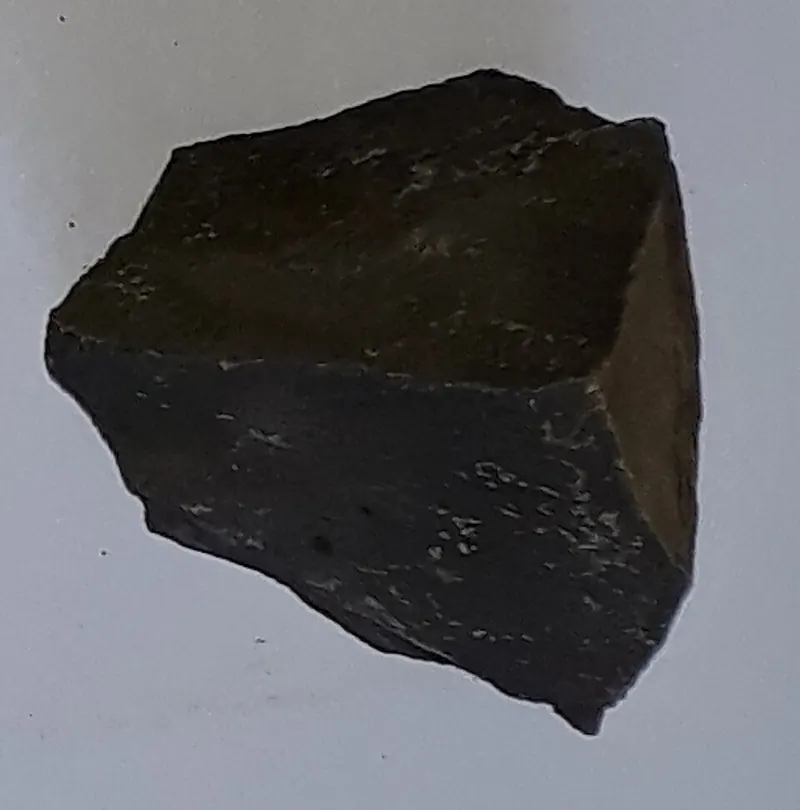
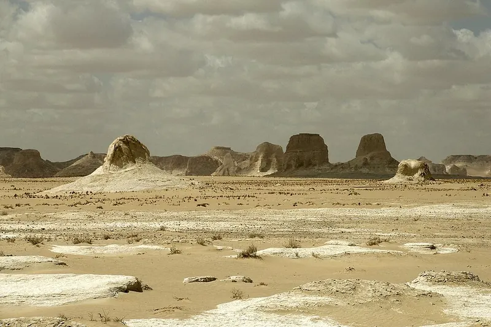
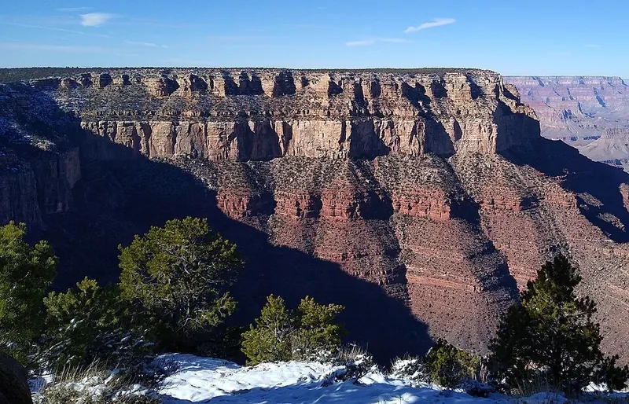

Cambridge Primary Checkpoint · Science 0097 · Stage 6 · Earth and space
The Rock Cycle
How igneous, sedimentary and metamorphic rocks form and change into each other through melting, solidification, erosion, sedimentation, burial and metamorphism.
British & IGCSE › Checkpoint 6 › Checkpoint 6 Science — Complete Course
- Describe the rock cycle and explain how igneous, sedimentary and metamorphic rocks form, using the words solidification, erosion, sedimentation, burial, metamorphism and melting (6ESc.01).
- Skills used on this page: using a model (the rock-cycle diagram) to describe a process that is too slow and too deep to watch (6TWSm.01, 6TWSm.02).
You met the three rock types on the page Rocks and Fossils. This page shows how rocks change from one type into another, again and again, over millions of years. This never-ending loop is called the rock cycle.
Key words
| Word / phrase | Meaning / use |
|---|---|
| rock cycle | دورة الصخور — the slow, never-ending changes of rocks from one type to another |
| melting | انصهار — rock deep underground gets so hot that it turns into liquid magma |
| solidification | تصلّب / تجمّد — magma or lava cools down and becomes solid igneous rock |
| weathering | تجوية — rocks breaking into smaller pieces where they are (by rain, heat and cold, plant roots) |
| erosion | تعرية — rock pieces being worn away and carried off by water, wind or ice |
| sedimentation (deposition) | ترسيب — sediment settling at the bottom of water in layers |
| burial | دفن — layers of sediment being covered by more layers; the weight squashes them into rock |
| metamorphism | تحوّل — a rock being changed by heat and pressure without melting |
| uplift | رفع / ارتفاع — movements of the Earth push buried rock up to the surface |
| pressure | ضغط — a squeezing force |
1. The rock cycle diagram
Follow the arrows from Magma: magma solidifies into igneous rock → weathering and erosion break it into sediment → sedimentation and burial turn the sediment into sedimentary rock → heat and pressure (metamorphism) change it into metamorphic rock → melting turns it back into magma. Then the cycle starts again.
Rocks do not have to go all the way round. Any rock at the surface can be eroded into sediment; any rock buried deep enough can be changed by heat and pressure into metamorphic rock; and any rock that gets hot enough will melt into magma.
2. The processes one by one
| Process | What happens | Where | Rock made (or what it makes) |
|---|---|---|---|
| Melting | Rock is heated so much that it turns into liquid magma | Deep underground | Magma |
| Solidification | Magma or lava cools down and becomes solid; crystals grow as it cools | Underground (magma) or at the surface (lava) | Igneous rock |
| Weathering and erosion | Rock is broken into small pieces and carried away by rivers, wind, ice or the sea | At the Earth's surface | Sediment (sand, mud, pebbles) |
| Sedimentation | Moving water slows down and drops the sediment; it settles in flat layers | At the bottom of lakes, seas and river mouths | Layers of loose sediment |
| Burial | New layers cover old ones; their weight presses the grains together (compaction) and minerals cement them | Under more layers of sediment | Sedimentary rock |
| Metamorphism | Rock is heated and squeezed but does NOT melt; its minerals change into new crystals | Deep underground or next to hot magma | Metamorphic rock |
Melting and solidification — making igneous rock
Deep inside the Earth it is extremely hot. Rock that is pushed down far enough melts to form magma. Magma is less dense than the solid rock around it, so it slowly rises. When it cools it solidifies (becomes solid) and crystals grow:
- Inside the Earth the magma cools slowly → crystals have a long time to grow → large crystals (e.g. granite).
- At the surface lava from a volcano cools quickly → crystals have little time to grow → small crystals (e.g. basalt).

Erosion — breaking rocks down and moving them
When rocks are at the surface, the weather slowly breaks them into pieces (weathering): rain gets into cracks; in deserts, rocks heat up by day and cool at night, so the outside layers crack and flake off; plant roots grow into cracks and split rock apart. The pieces are then carried away by rivers, wind, waves and ice (erosion). As they are carried, they knock against each other and become smaller and rounder — that is why sedimentary rocks have rounded grains.

Sedimentation and burial — making sedimentary rock
When a river reaches a lake or the sea it slows down and drops its load. The sediment settles in flat layers (sedimentation). Over millions of years more layers are laid on top (burial). The weight of the layers above presses the grains together and squeezes out the water (compaction), and dissolved minerals glue the grains together (cementation). The sediment has become sedimentary rock.

Metamorphism — making metamorphic rock
If sedimentary or igneous rock is buried very deep, or is next to hot magma, it is heated and squeezed. It does not melt, but its minerals slowly change into new, harder crystals that are often lined up in bands. This is metamorphism. For example, limestone → marble; mudstone → slate.
Uplift — back to the surface
Movements of the Earth's crust can slowly push buried rocks upwards — this is how mountains are made. Once the rock is at the surface, weathering and erosion begin again. Uplift is the reason we can find fossils from the sea bed high up in mountains and deserts.
3. A journey through the rock cycle
Here is one possible journey, using Egypt as the setting:
- Millions of years ago, magma cooled slowly underground and solidified into the granite of Aswan (igneous rock).
- Uplift brought the granite to the surface. Heat, cold and water weathered it, and the Nile eroded the pieces and carried sand grains downstream.
- Where the river slows near the sea, the grains settle in layers (sedimentation) in the Delta and the Mediterranean.
- Over millions of years, more layers bury them (burial); they are pressed and cemented into sandstone (sedimentary rock).
- If that sandstone is buried even deeper and heated and squeezed (metamorphism), it becomes quartzite (metamorphic rock).
- If it is pushed deeper still it may melt into magma — and the journey begins again.
- دورة الصخور: الصخور بتتحوّل من نوع لنوع ببطء شديد (ملايين السنين) وبترجع تاني — مالهاش بداية ولا نهاية.
- الصهارة تبرد وتتصلب (solidification) ← صخر ناري. البلورات كبيرة لو التبريد بطيء تحت الأرض، وصغيرة لو التبريد سريع فوق السطح.
- التجوية والتعرية (erosion) ← رواسب ← تترسب في طبقات (sedimentation) ← تندفن وتتضغط (burial) ← صخر رسوبي.
- حرارة + ضغط من غير انصهار (metamorphism) ← صخر متحول. لو الصخر انصهر (melting) ← صهارة.
Worked examples
Worked example 1 — A mountain is made of granite. Describe how some of this granite could become part of a sedimentary rock. [3 marks]
- The granite is weathered and eroded into small pieces, which are carried away by a river (1 mark).
- The pieces settle in layers at the bottom of a lake or sea — sedimentation (1 mark).
- More layers bury them; the weight presses them together and they are cemented into sedimentary rock (1 mark).
Exam tip: three marks = three stages. Use the key words from the curriculum: erosion, sedimentation, burial.
Worked example 2 — Basalt forms when lava cools on the surface of the Earth. (a) Name the process when lava turns into solid rock. [1] (b) Explain why basalt has small crystals. [1]
- (a) Solidification (accept: cooling / freezing).
- (b) The lava cools quickly at the surface, so the crystals have little time to grow.
Worked example 3 — Describe how an igneous rock could become a metamorphic rock without first becoming sediment. [2 marks]
- The igneous rock is buried deep underground (or is close to hot magma) (1 mark).
- It is heated and squeezed (pressure) but does not melt, so its minerals change → metamorphic rock (1 mark).
Common mistake: writing 'it melts'. If it melts, it becomes magma and then igneous rock again.
Worked example 4 — Complete the sentences using words from the box: burial, erosion, melting, solidification. [4 marks]
- Rock that is heated deep underground until it becomes liquid is going through ________.
- When magma cools and becomes solid, this is called ________.
- Rivers carrying away pieces of rock is an example of ________.
- Layers of sediment being covered and pressed together by more layers is ________.
Answers: 1 melting; 2 solidification; 3 erosion; 4 burial (1 mark each).
Worked example 5 — Explain why scientists use a diagram (a model) to describe the rock cycle. [1 mark]
- The changes are far too slow (millions of years) and happen deep underground, so we cannot watch them; the model shows all the stages and how they link together (1 mark for either idea).
- Writing that metamorphic rock forms by melting. It forms by heat and pressure without melting.
- Mixing up erosion (wearing away and carrying) with sedimentation (settling in layers).
- Thinking the cycle always goes in one order. Shortcuts are possible: any rock can be eroded, changed or melted.
- Saying igneous rock forms when lava 'dries'. Lava cools and solidifies (freezes) — it does not dry.
- Forgetting the time: the rock cycle takes millions of years. You cannot see it happen in a lifetime (except a volcano erupting).
- Linking crystal size the wrong way: slow cooling = large crystals; fast cooling = small crystals.
- Label a rock-cycle diagram — name the process shown by an arrow, or say which letter shows a process.
- Complete sentences with words from a box (melting, solidification, erosion, sedimentation, burial, metamorphism).
- Put stages in order — e.g. how a mountain becomes sandstone.
- Describe how one rock type becomes another. Use one key word for each mark.
- Explain crystal size (cooling speed) or rounded grains (erosion).
- Read the arrows carefully: the arrow shows the direction of change (from → to).
Practice
- Melting → magma; solidification → igneous rock (slow cooling = large crystals, fast = small).
- Erosion → sediment; sedimentation → layers; burial (compaction and cementation) → sedimentary rock.
- Metamorphism = heat and pressure without melting → metamorphic rock.
- Any rock can be eroded, changed by heat and pressure, or melted — the cycle has shortcuts and no end.
- The rock cycle is very slow (millions of years), so we use a diagram as a model to describe it.
All pages in this course
Start here
- Checkpoint 6 Science: The Test and How to Prepare
- Thinking and Working Scientifically: Investigations, Variables, Tables and Graphs
Biology
- The Heart and Circulatory System
- The Lungs and Respiratory System
- Human Reproductive System and Puberty
- Diseases, Hygiene and the Body's Defences
- Food Chains, Food Webs, Energy and Toxins
Chemistry
- Properties of Substances: Melting and Boiling Points, Gases, Conductors
- Reversible Changes and Dissolving
- Boiling and Evaporation
- Chemical Reactions: Reactants, Products and Evidence
Physics
- Mass, Weight and Gravity
- Force Diagrams and Forces on Moving Objects
- Floating and Sinking
- Light: Reflection and Refraction
- Electric Circuits, Symbols, Series and Parallel
Earth and space
Practice tests